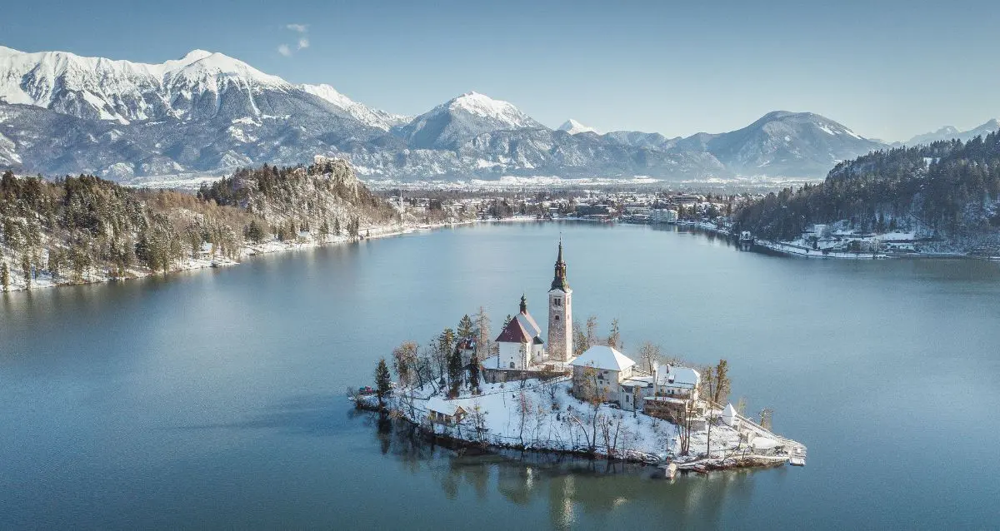

ЗИМСКА ПОНУДА

ЗИМСКА БАЈКА НА БЛЕД
Блед, Словенија
06.12 - 12.12
Откријте ја магијата на Блед во зимско руво. Уживајте во прекрасното езеро опкружено со снежни планини, бајковити пејзажи и мирна зимска атмосфера. Совршена понуда за сите кои сакаат природа, романтични прошетки, планински авантури и незаборавни моменти.
ЗИМСКА АВАНТУРА
Едно од најпознатите туристички места во Словенија, познато по прекрасното Бледско Езеро, живописниот остров и средновековниот Бледски замок. Езерото е опкружено со планини и нуди прекрасни панорамски погледи, додека на островот се наоѓа познатата црква до која традиционално се пристигнува со плетна. Бледскиот замок, сместен високо над езерото, дополнително ја збогатува глетката и овозможува прекрасен поглед кон езерото, островот и околните алпски предели.
Еден од најубавите планински предели во Словенија, познат по високите снежни врвови, чистиот планински воздух и прекрасната недопрена природа. Јулијските Алпи нудат спектакуларни панорамски погледи и создаваат совршена зимска атмосфера за уживање, фотографирање и прошетки низ живописните планински предели.
Состанок со групата на автобуска станица во Скопје, 30 минути пред поаѓање. Поаѓање со организиран автобуски превоз кон Љубљана. Потоа следи организиран автобуски превоз до хотелот во Блед. По пристигнувањето следуваат сместување во хотел и време за одмор. Во попладневните часови е предвидена прва прошетка покрај Бледското Езеро, со запознавање со околината и уживање во зимската атмосфера. Вечерта е слободна за вечера и индивидуални активности. Ноќевање во хотел.
Појадок во хотелот и организирана прошетка покрај Бледското Езеро. Следува уживање во прекрасните зимски пејзажи и погледите кон Бледскиот остров и околните планини. Предвидено е слободно време за фотографирање, кафе и индивидуално уживање во атмосферата на Блед. Во попладневните часови следува слободно време за одмор и прошетка низ местото. Вечерта е слободна за вечера и индивидуални активности. Ноќевање во хотел.
Појадок во хотелот и организирана посета на Бледскиот замок. Следува разгледување на замокот и уживање во панорамскиот поглед кон Бледското Езеро, островот и околните планини. По посетата е предвидено слободно време за ручек и одмор. Во попладневните часови следува прошетка низ центарот на Блед и слободно време за кафе и фотографирање. Ноќевање во хотел.
Појадок и организирано заминување кон Бледскиот остров. Доколку временските услови и условите за пловидба дозволуваат, следува превоз со традиционална плетна до островот. Предвидено е време за разгледување на островот и црквата, фотографирање и уживање во зимската атмосфера. По враќањето следува слободно време за ручек и одмор. Попладнето е слободно за индивидуална прошетка покрај езерото. Ноќевање во хотел.
Појадок во хотелот и организирано заминување кон околните алпски предели. Следува панорамско патување низ областа на Јулијските Алпи, со можност за запирање на погодни места за фотографирање и уживање во снежните планински пејзажи. Во текот на денот е предвидено слободно време за ручек и одмор. Во попладневните часови следува враќање во Блед. Вечерта е слободна за последна прошетка, вечера и одмор. Ноќевање во хотел.
Појадок во хотелот и одјавување согласно предвиденото време. Следува кратка утринска прошетка покрај езерото и слободно време за последни фотографии, кафе или купување сувенири. Потоа следува собирање на групата и организирано поаѓање кон автобуската станица. По пристигнувањето на автобуската станица следува завршување на потребните процедури и поаѓање кон Скопје. По пристигнувањето и преземањето на багажот завршува организираното патување.